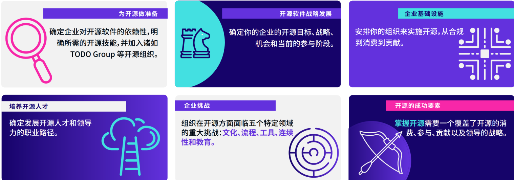

<!DOCTYPE html>
<html lang="en">
  <head>
    <meta charset="utf-8" />
    <meta name="viewport" content="width=device-width, initial-scale=1.0, maximum-scale=1.0, user-scalable=no" />

    <title>reveal-md</title>
    <link rel="shortcut icon" href="./favicon.ico" />
    <link rel="stylesheet" href="./dist/reset.css" />
    <link rel="stylesheet" href="./dist/reveal.css" />
    <link rel="stylesheet" href="./dist/theme/black.css" id="theme" />
    <link rel="stylesheet" href="./css/highlight/base16/zenburn.css" />


  </head>
  <body>
    <div class="reveal">
      <div class="slides"><section  data-markdown><script type="text/template"># 企业文化与开源文化

## 企业为开源采取的行动



</script></section><section  data-markdown><script type="text/template">
## 什么是企业文化？

**组织文化（Organizational Culture）或者企业文化（Corporate Culture）** 是指一个组织由其共有的价值观、仪式、符号、处事方式和信念等内化认同表现出其特有的行为模式。可以观察到组织人员的行为规律、工作的团体规范、组织信奉的主要价值、指导组织决策的哲学观念等等。

在现代管理学里，这是一种企业主动通过一系列活动来塑造而成的文化形态，当这种文化被建立起来后，会成为塑造内部员工行为和关系的规范，是企业内部所有人共同遵循的价值观，对维系企业成员的统一性和凝聚力起很大的作用。

</script></section><section  data-markdown><script type="text/template">
## 什么是开源文化？

李建盛：《[我们常说的开源文化，到底是什么？](https://opensourceway.community/posts/opensource_culture/what-is-open-source-culture-when-people-said/)》

* 开放与共享
* 代码风格、品味
* 沟通与协作
* 知识财产权的保护
* 开源软件的商业逻辑
* 价值观

</script></section><section  data-markdown><script type="text/template">
## 开源社：《开源人宣言》

* 分享（Sharing）：乐于分享是一切善举的开端
* 开放（Openness）：公开透明是一切良好协作的基石
* 平等（Equality）：平等是社区健康的保障
* 协作（Collaboration）：开放式协作，逐步凝聚共识是社区繁荣的秘诀
* 创造美好世界（Build a better world）：创造更加美好的世界，是开源的终极追求


</script></section><section  data-markdown><script type="text/template">
## 开源文化，是否能够改变企业文化？

### 或者说：企业文化是否能够更多的接纳开源文化？</script></section></div>
    </div>

    <script src="./dist/reveal.js"></script>

    <script src="./plugin/markdown/markdown.js"></script>
    <script src="./plugin/highlight/highlight.js"></script>
    <script src="./plugin/zoom/zoom.js"></script>
    <script src="./plugin/notes/notes.js"></script>
    <script src="./plugin/math/math.js"></script>
    <script>
      function extend() {
        var target = {};
        for (var i = 0; i < arguments.length; i++) {
          var source = arguments[i];
          for (var key in source) {
            if (source.hasOwnProperty(key)) {
              target[key] = source[key];
            }
          }
        }
        return target;
      }

      // default options to init reveal.js
      var defaultOptions = {
        controls: true,
        progress: true,
        history: true,
        center: true,
        transition: 'default', // none/fade/slide/convex/concave/zoom
        plugins: [
          RevealMarkdown,
          RevealHighlight,
          RevealZoom,
          RevealNotes,
          RevealMath
        ]
      };

      // options from URL query string
      var queryOptions = Reveal().getQueryHash() || {};

      var options = extend(defaultOptions, {}, queryOptions);
    </script>

    <script src="./_assets/./assets/echarts.min.js"></script>

    <script>
      Reveal.initialize(options);
    </script>
  </body>
</html>
